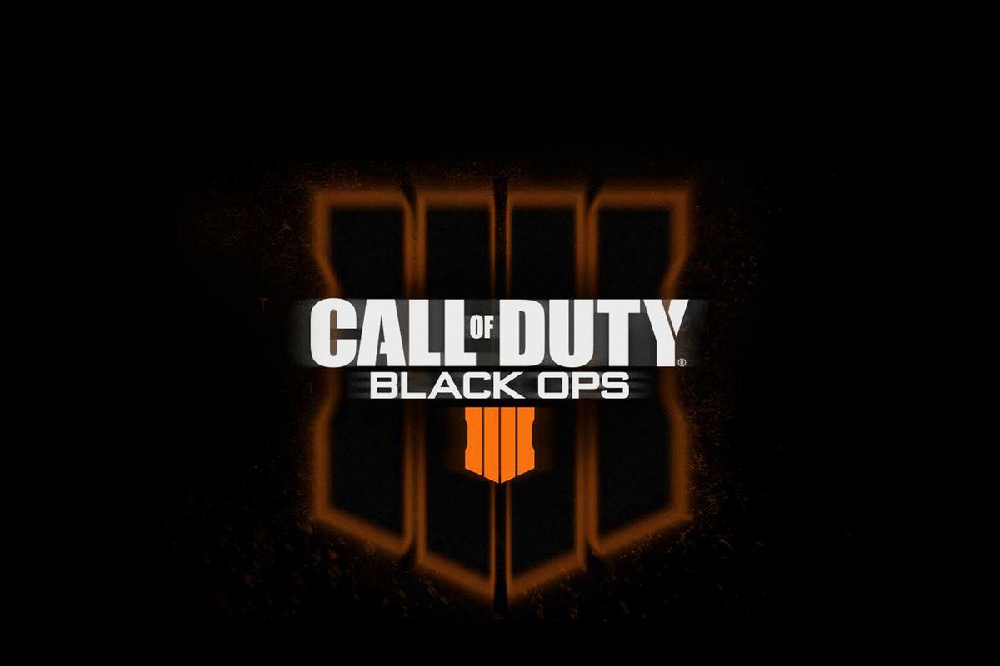

Call of Duty is also one of my favorite games that i enjoy playing. I've played this game since Call of Duty 3. And so far I've enjoyed the series even though the game itself has been made by some other companies and some of the games were not as great as others. Overall though I really enhoy the game, it has been slowly over time getting a little bored but for some reason the game itself has still got me hooked onto it.